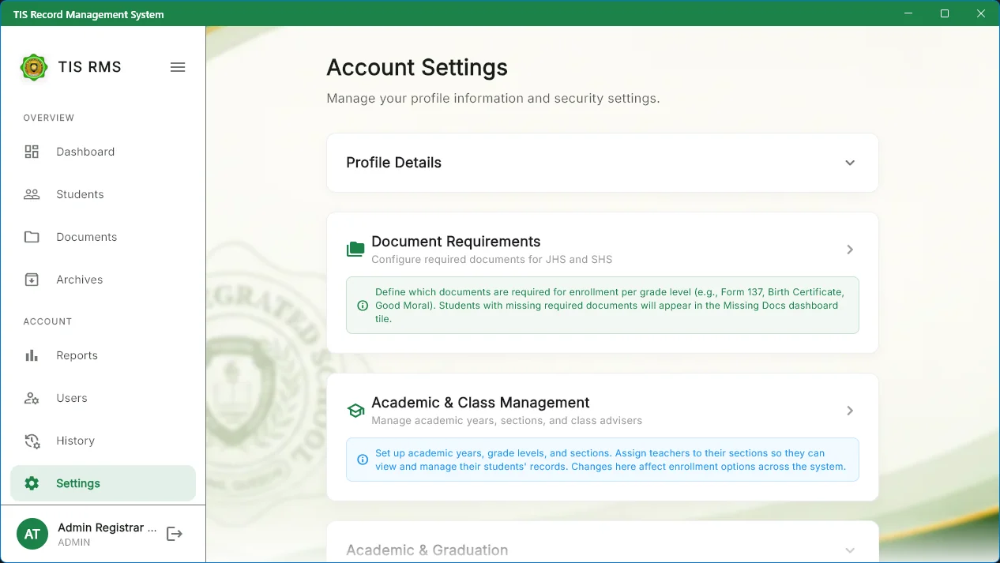
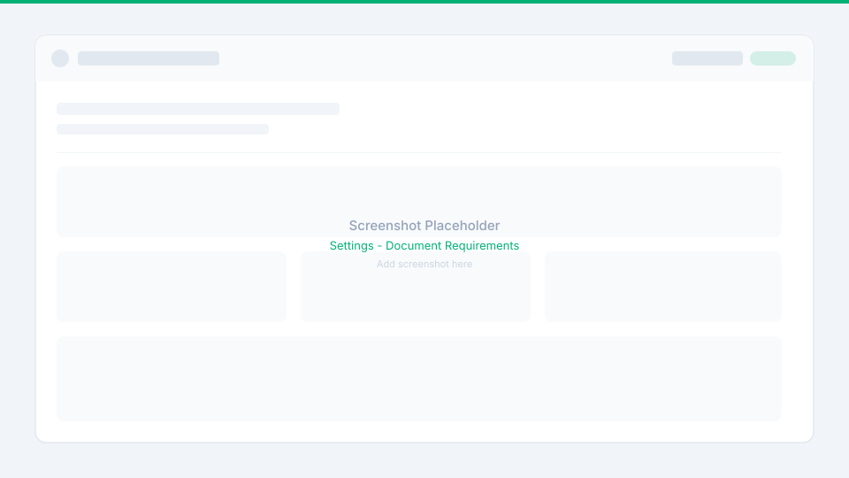
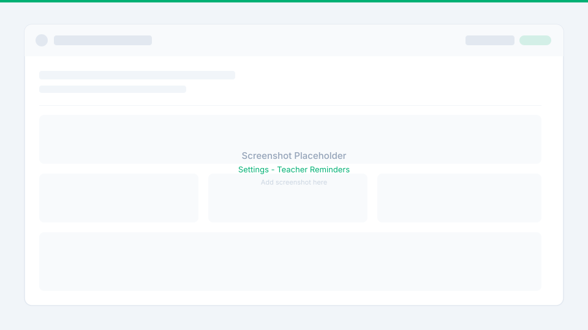
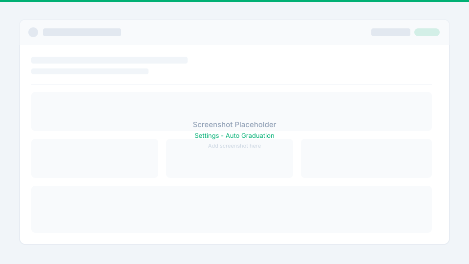
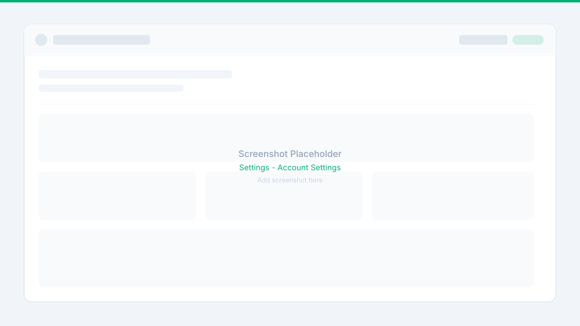

Module 9: School Settings & Document Checklist
Academic setup, dynamic document checklists, automated reminders, archiving configuration, and graduation rules.
- Academic & Class Management: Configure Academic Years, Grade Levels, Sections, and Class Adviser assignments that govern teacher permissions across the app.
- Dynamic Document Requirements: Add, edit, or toggle requirement definitions (JHS/SHS scope, mandatory flags, accepted file types, and due dates) synchronized live from the backend.
- Teacher Document Reminders: Configure automatic reminder thresholds to notify advisers about upcoming document deadlines.
- Automated Archiving & Graduation: Establish inactive student archiving grace periods and run graduation checks for Grade 10 and Grade 12 cohorts.
Module 9 is the operational engine of TIS-RMS. Administrators configure academic structures, document rules, and automated maintenance workflows, while staff can manage their personal profiles.

Academic & Class Management
Administrators manage the school's foundational academic hierarchy:
- Manage Structures: Create and modify Academic Years, Grade Levels, Sections, and Class Advisers / Teacher Assignments.
- Advisory Scope Control: Class adviser assignments dictate which sections teachers can access, view, and manage throughout the application.
- System Synchronization: Changes to academic years, grade levels, and sections are immediately reflected in enrollment forms, filters, and reports across the system.
- Graduation Support: Academic year setup underpins the automatic graduation evaluation process.

Setup academic years, grade levels, sections, and assign classroom teachers as advisers
Document Requirements Management
Administrators configure the dynamic document checklist used throughout the system:
- Add & Edit Requirements: Create new document requirements or modify existing ones.
- Enable / Disable: Enabled requirements appear in active student checklists. Disabling a requirement removes it from active checklists without deleting previously uploaded documents.
- Mandatory Flag: Set whether a document is strictly required for DepEd compliance or optional.
- Level Assignment: Restrict requirements to JHS (Grade 7–10) or SHS (Grade 11–12).
- File Constraints: Define accepted file formats (PDF, JPG, PNG) and the maximum number of file uploads allowed.
- Due Dates: Assign official submission deadlines for automated compliance alerts.

Dynamic requirements editor with mandatory toggles, JHS/SHS scope, accepted formats, and due dates
Teacher Document Reminders
Administrators can configure automated email and system reminders for teachers:
- Automated Reminder Toggle: Enable or disable automatic reminders for teachers.
- Threshold Days: Configure how many days before a document due date teachers should receive alerts.
- Section Targeting: Reminders notify teachers specifically about missing requirements in their assigned sections.

Configure automated notification schedules to alert classroom teachers of approaching document deadlines
Automatic Archiving Configuration
Administrators can automate student record archiving to keep active rosters clean:
- Enable / Disable Engine: Toggle automated background archiving on or off.
- Grace Period Configuration: Define the number of grace days after an academic year closes before un-enrolled students are automatically archived.
- Academic Schedule Integration: The system leverages the active academic-year calendar to determine eligible records.
Configure automated archival schedules and grace periods for students without active enrollment
Automatic Graduation Engine
TIS-RMS supports an automated graduation process for completing cohorts:
- Cohort Evaluation: Automatically evaluates eligible Grade 10 (Completers) and Grade 12 (Graduates) students based on the configured academic-year schedule.
- Manual Execution: Administrators can manually trigger the graduation check at any time. The system reports whether the process was executed or skipped based on schedule criteria.

Automated graduation processing interface with manual trigger button and execution status reports
Account Settings, About & Support
- Account Settings: Users can update their first name, middle name, last name, extension, phone number, and email address, as well as change their login passwords.
- About, Support & System Information: Displays official application release details, software version, and technical developer support information.

Personal user profile editor with contact information updates and self-service password changes

System version details, school credits, and technical assistance contact channels